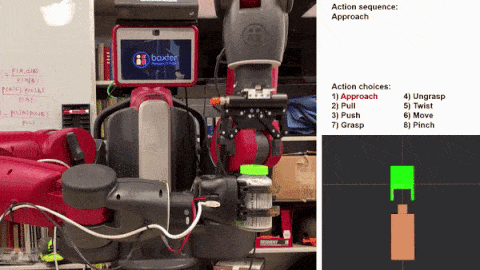
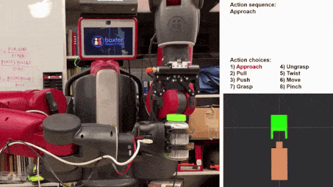

About Me
- My Mission: To make the world as smart as possible. My life goal lies at the intersection of intelligence and system design; I want to create machine intelligence that will increase access to education and further general technological progress.
- My mission approach: I study artificial intelligence (AI) and robotics from a perspective inspired by human cognition. I'm currently a PhD candidate advised by Dr. Song-Chun Zhu at Center for Vision, Cognition, Learning, and Autonomy (VCLA) at UCLA.


 
